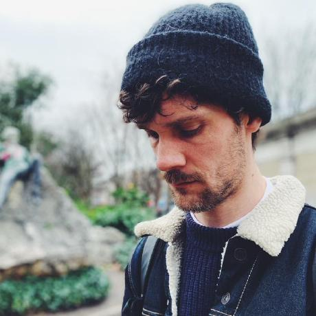
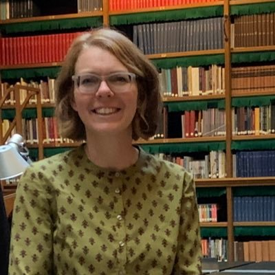

Background
Historical BotanyIn a situation of declining biodiversity and irreversible environmental change, understanding and preserving botanical life is crucial. We are confronted with the phenomenon of 'shifting baseline syndrome', where successive generations lose sight of past biodiversity richness, basing their perceptions of nature’s wealth on progressively impoverished baselines. These 'forgotten' baselines, reflecting vibrant ecosystems, are chronicled in centuries-old botanical documentation. The recent digitization of the Flora Batava emerges as a significant tool to reconnect with historical biodiversity records and reinstate a more complete and historically-informed understanding of nature's abundance. The project seeks to explore the intertwined evolution of botany and society, casting light on societal trends like women’s role in botany, evolving sentiments towards plants, and the impact of events like land clearance.
Historical Biodiversity Patterns
This project seeks to enhance our understanding of biodiversity shifts by integrating historical data from Flora Batava with current trends from the NDFF Verspreidingsatlas. It will explore the impact of human activities on biodiversity, aiming to create an accessible dataset that combines historical and modern insights on the Netherlands' biodiversity.
Botany as a sociocultural phenomenon
This project examines how social dynamics within the Dutch context have shaped botanical knowledge, focusing on contributions from diverse groups like women and farmers. By analyzing historical data on the spatial and gender distribution of contributors, it aims to uncover the societal influences on botany and trace the beginnings of citizen science in this area.
Decoding Bias and Cultural Influences
This project aims to uncover biases and cultural impacts in historical botanical data, examining how collection methods and observer backgrounds influenced findings. By analyzing species records and using models from archaeology and cultural evolution, it seeks to reveal how societal factors shaped botanical science.
Partners
Who's involved?The project is funded by the Royal Netherlands Academy of Arts and Sciences through the research funds "Onderzoeksfonds KNAW-instituten" It is executed by the Meertens Institute in close collaboration with FLORON, KNAW-NIOO, the National Library, and advisors from Utrecht University.